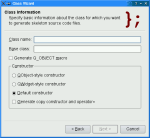

Dialog Examples

Qt includes standard dialogs for many common operations, such as file selection, printing, and color selection.
Custom dialogs can also be created for specialized modal or modeless interactions with users.
The License Wizard example shows how to implement complex wizards in Qt. | |
The Standard Dialogs example shows the standard dialogs that are provided by Qt. | |
The Tab Dialog example shows how to construct a tab dialog using the QTabWidget class. | |
The Trivial Wizard example illustrates how to create a linear three-page registration wizard using three instances of QWizardPage and one instance of QWizard. |